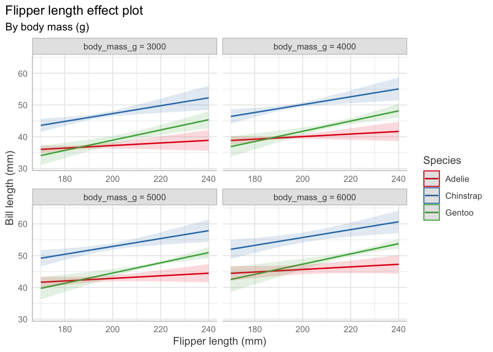
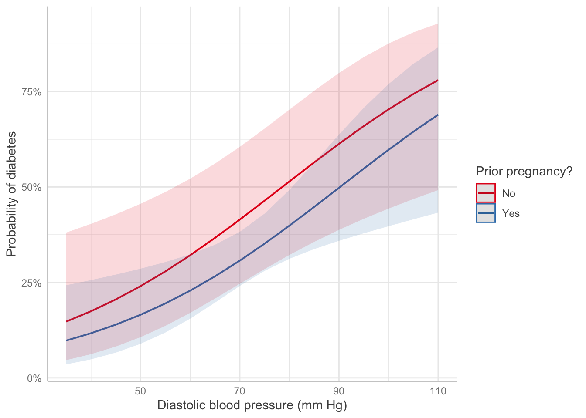
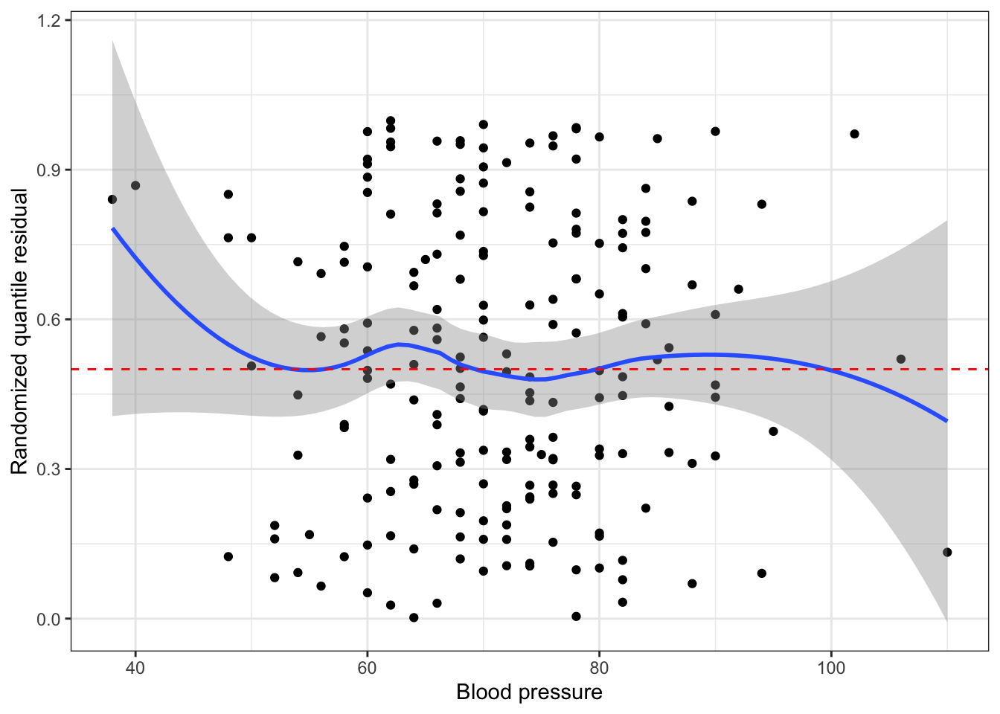
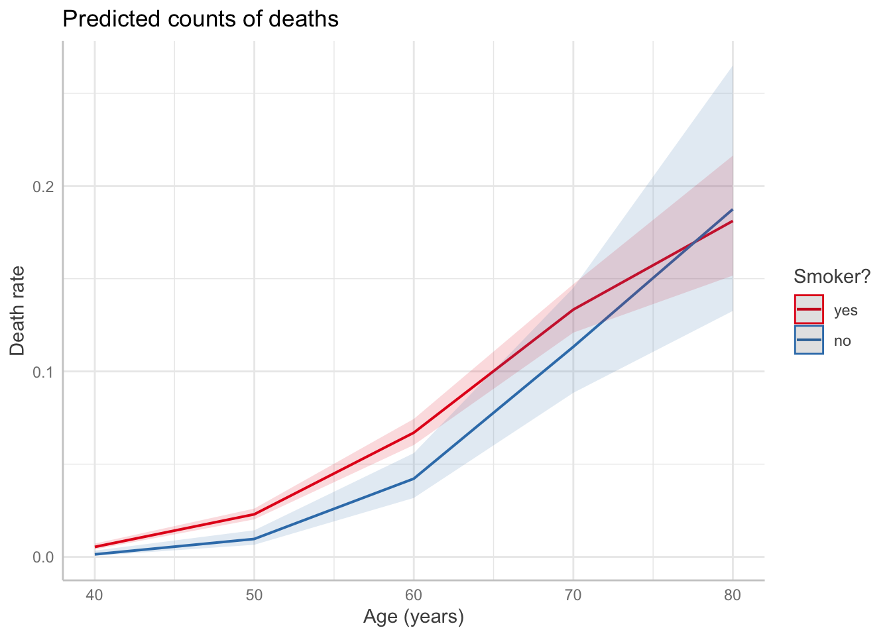

My cohortmate, Sara Colando, and I created these recipes in preparation for the Data Analysis Exam at the end of our first year. The vast majority of these materials are pulled from Alex Reinhart’s 36-707 lecture notes.
For the regression model \(\mathbf{Y} = \mathbf{X}\beta + e\), we have assumptions:
The errors have mean 0: \(\mathbb{E}[e] = 0\)
The error variance is constant: \(\text{Var}(e|\mathbf{X}) = \sigma^2I\)
The errors are uncorrelated (data points are iid): \(\text{Var}(e|\mathbf{X}) = \sigma^2I\).
The errors are normally distributed. With a large sample size and if you are not doing prediction, non-normality is not a serious concern.
We also assume \(\mathbf{X}\) is fixed, not random. Assumptions 1 and 2 can be checked with a plot of residuals vs. fitted values, while Assumption 4 can be checked with a quantile-quantile plot of the standardized or studentized residuals.
How a Q-Q plot works: if there are \(n\) residuals, calculate the expected value of the minimum of \(n\) draws from a standard normal distribution, the expected value of the second-smallest of \(n\) draws from a standard normal distribution, etc. These are the “theoretical quantiles”. For each residual, we plot its actual value against the expected value. In the ideal case where every residual is equal to its expected value, this will result in a diagonal line.
Types of residuals
Standardized residuals: raw residual/estimated standard deviation
Studentized residuals: raw residual/estimated standard deviation without that specific point. This makes studentized residuals more helpful for identifying outliers.
The Studentized residuals have constant variance, so the scatter of residuals above and below 0 should be similar for different values of \(U\), where \(U\) is a covariate or the fitted values.
Partial residuals: allow us to visualize the marginal effect of covariate \(X_k\) on \(Y\), conditional on the other predictors being included in the model.
Not standardized and hence have unequal variance, but when the true relationship is nonlinear, partial residual plots may suggest what kind of transformation or additional terms could better fit the data.
Recipe
Fit model (consider interactions, nonlinear patterns from EDA, confounding variables, transformations).
Partial residuals (look for nonlinearity, adjust model as needed)
Plot residuals against fitted values
Look for heteroskedasticity; use sandwich estimator if present.
Diagnostic for constant error variance, errors have mean 0.
QQ plot to check for any gross deviations from normality
Diagnostic for normally distributed errors.
Non-normality is not a serious concern if sample size is large
Check for outliers impact on coefficients (Cook’s distance)
Check for collinearity issues (based on EDA, variance inflation factor)
If we included spline, polynomial terms, or interactions, conduct an F test
If we included spline, polynomial terms, or interactions create effect plot
For linear terms, interpret with test statistic, p-value, confidence interval
If sample size is small, make a statement about power
Limitations/Conclusion
unmeasured confounders
dichotomized confounders
unaccounted for correlation, lack of independence (spatial, repeated measured)
non-random missingness
sample demographics compared to population of interest
Interaction: For Adelie penguins (the baseline level), the association between bill length and flipper length is \(0.13\) mm of bill length per millimeter of flipper length, on average. But for chinstrap penguins, the association is \(0.13 + 0.09 = 0.22\) mm of bill length per millimeter of flipper length, on average.
Test for a factor coefficient: For a given flipper length, gentoo penguins have a smaller mean bill length \((M=47.5\) mm, \(SD = 3.1)\) than Adelie penguins \((M=38.8\) mm, \(SD = 2.7)\), \(t(336) = -3.5, p = 0.001\). (use tidy() and summarize to get means/sd).
Confidence interval for a factor coefficient: For a given flipper length, gentoo penguin bills are shorter than Adelie penguin bills by an average of 34.3 mm (95% CI [15.01, 53.64]).
Test for a slope: In Adelie penguins, there was a statistically significant association between flipper length and bill length, \(\hat\beta = 0.13, t(336) = 4.17, p<0.001\).
Describe a slope: Among Adelie penguins, each additional millimeter of flipper length is associated with 0.13 millimeters of additional bill length, on average (95% CI [0.07, 0.2]).
Drawing causal claims
If we are confident in our causal model and can control for the necessary confounders, we can estimate a chosen causal path, such as the causal relationship \(X \to Y\). But we should make clear the limitations of our causal claims:
If our regression model is misspecified or otherwise incorrect, our estimates may be wrong.
If our causal model is missing important confounders, or we have measured some confounders incompletely or inaccurately, our estimates may include some bias from confounding.
If our data comes from a specific sample or subset of a population, the causal claims may not generalize beyond it.
Code
Predictor Effect Plots
Effect plots allow us to vary one predictor while holding others fixed to visualize the relationships. Other predictors are set at their average values.
# change depending on value of body mass and flipper lengthpenguin_fit_2 <-lm( bill_length_mm ~ flipper_length_mm + species + flipper_length_mm:species + body_mass_g,data = penguins)predict_response(penguin_fit_2,terms =c("flipper_length_mm", "species", "body_mass_g [3000, 4000, 5000, 6000]")) |>plot() +labs(x ="Flipper length (mm)", y ="Bill length (mm)",color ="Species",title ="Flipper length effect plot",subtitle ="By body mass (g)")+theme(plot.title.position ="plot")

Residuals vs. fitted
Show code
augment(penguin_fit) |>ggplot(aes(x = .fitted, y = .resid)) +geom_point() +geom_smooth(se =FALSE) +labs(x ="Fitted value", y ="Residual")+geom_hline(linetype ="dashed", color ="red", yintercept =0)+theme_classic()
If heteroskedasticity means our estimator \(\widehat{\text{Var}}(\hat \beta) = S^2 (\mathbf X^T\mathbf X)^{-1}\) is incorrect, we can use the sandwich estimator.
The sandwich estimator performs poorly for small sample sizes \((n \leq 250)\)
A recommended adaptation is HC3, which performs well even in small sample sizes.
Show code
#vcovHC(penguin_fit) # uses HC3 by defaultConfint(penguin_fit, vcov =vcovHC(penguin_fit))
Observations with large errors can pull our \(\hat \beta\) away from \(\beta\), causing high variance in estimates and estimated regression lines that fit the data poorly.
Observations with high leverage have the potential to pull the fitted regression line to be close to them (they could fall on the regression line and not affect things at all). Instead we use Cook’s distance which measures the difference in \(\hat \beta\) when the observation is excluded from the fit. It can be interpreted as a distance that is rescaled proportional to the variance of \(\text{Var}(\hat \beta)\), so the scale is consistent. We can look for values \(D_i \geq 1\) in augment().
Collinearity
Collinearity is not a violation of assumptions because there is no assumptions on the structure of \(\mathbf{X}\) aside from it being full rank.
Why it is bad and implications:
Can create high covariance between components of \(\hat \beta\) and increases the variance of the predictions.
It can be numerically difficult to calculate the least squares estimates. Tiny rounding errors produce large differences in estimates.
This should only be an issue in extreme cases. If the computer can calculate \(\hat \beta\) and Var\((\hat \beta)\), the reported least squares estimates are the correct ones given the model and predictors. There will just be large CIs.
We must be careful about interpretation. \(\beta_1\) is the change in the mean of \(Y\) when increasing \(X_1\) and keeping \(X_2\) fixed. If \(X_1\) and \(X_2\) are highly correlated, that may be very different than the change in the mean of \(Y\) when increasing \(X_1\)without holding \(X_2\) fixed.
Summary: If we have collinearity, ask if we have chosen the correct predictors for the research question. If so, there is little we can do. If we are interested in prediction rather than coefficients, collinearity is a problem as it creates high prediction variance, so we might use penalization to reduce variance.
Partially observed predictors
In the presence of measurement error, we may experience regression dilution (the slope is attenuated to 0 and \(\hat\beta\) is biased). We might have measurement error in a number of instances, for instance:
\(X_i\) involves physical quantities that have to be measured with equipment that has inherent error
\(X_i\) is a quantity that fluctuates over time but has only been observed at one time, and the relationship of interest is with its long-term average
\(X_i\) is some variable that cannot be measured and instead are observing an easy-to-measure variable that is only correlated with it
\(X_i\) is obtained by surveying people who may give inaccurate or misremembered answers
Discretization or dichotomization causes similar issues: we lose information about a predictor, biasing our estimate for its coefficient. If that predictor is correlated with other variables or is a confounding variable, our estimates for other predictors may also become biased.
Logistic Regression
When the outcome is binary, logistic regression models the response as \(\text{logit}(\Pr(Y = 1 \mid X = x)) = \beta^\top x,\) or equivalently, \[\begin{align*}
\Pr(Y = 1 \mid X = x) &= \text{logit}^{-1} (\beta^\top x)\\
\text{odds}(Y = 1 \mid X = x) &= \exp(\beta^\top x) \\
\log(\text{odds}(Y = 1 \mid X = x)) &= \beta^\top x.
\end{align*}\]
We consider \(\hat y_i\) to be the predicted probability: \(\hat y_i = \widehat{\Pr}(Y = 1 \mid X = x_i) = \text{logit}^{-1}(\hat \beta^\top x_i).\)
Assumptions
The log-odds is linearly related to the regressors: \(\log(\text{odds}(Y = 1 \mid X= x)) = \beta^\top x\)
The observations \(Y_i\) are conditionally independent given the covariates \(X_i\).
Recipe
Fit model (consider interactions, nonlinear patterns from EDA, confounding variables, transformations).
Partial residuals (look for remaining nonlinearity with log-odds, adjust model as needed). Diagnostic for nonlinearity between regressors and log-odds.
Plot randomized quantile residuals against each predictor. Plot QQ plot (uniform distribution). This is a second diagnostic for nonlinearity.
Optionally, create a calibration plot.
Check for outliers impact on coefficients (Cook’s distance)
Check for collinearity issues (based on EDA, variance inflation factor)
If we included spline or polynomial terms, conduct a deviance test
If we included spline or polynomial terms (or interactions), create effect plots. Ensure it is on response scale, not log-odds
For linear terms, interpret with test statistic, p-value, confidence interval. Exponentiate!
If sample size is small, make a statement about power
Limitations/Conclusion
unmeasured confounders
dichotomized confounders
unaccounted for correlation, lack of independence (spatial, repeated measured)
non-random missingness
sample demographics compared to population of interest
statistical vs. practical significance
If it is a cohort study, consider which type (prospective, retrospective, case-control)
Abbreviations: CI = Confidence Interval, OR = Odds Ratio
Pregnancy: Table 1 gives the results of the logistic regression fit. Women with prior pregnancies were less likely to have diabetes \((\text{OR} = 0.626, 95\% CI = [0.27, 1.5])\), but this result was not significantly significant (\(z = -1.1, p=0.27\)). A larger sample may be necessary to determine if a relationship exists in the population.
Pregnancy: Pregnancy changes the log-odds of diabetes, relative to the baseline value, by -0.47. The odds ratio is 0.626, i.e. pregnancy multiplies the odds of diabetes by 0.626.
Blood pressure: Each unit of increase in blood pressure (measured in mm Hg) is associated with an increase in the log-odds of diabetes of 0.04, or a multiplication of the odds of diabetes by 1.04 (95% CI [1.01, 1.07]).
Code
Predictor Effect Plot
Show code
predict_response(pima_fit, terms =c("bp", "pregnancy")) |>plot() +labs(x ="Diastolic blood pressure (mm Hg)",y ="Probability of diabetes",color ="Prior pregnancy?", title =NULL)

EDA
Empirical Link Plot: Look for a linear relationship between the predictor and log-odds
Ordinary residuals for logistic regression exhibit this sort of grouping structure, as do standardized residuals (type = "pearson") and deviance residuals (type = "deviance"). These plots are not useful for interpretation.
Partial residuals illustrate the shape of the relationship between the predictor and log-odds, subject to the accuracy of the linearization. The shape is locally accurate, but may not be so accurate if the response probabilities cover a wide range over which the logit is not very linear.
Idea: transform residuals to have a continuous, not discrete, distribution. This requires randomization, so the resulting residuals are called randomized quantile residuals. When the model is correct, the randomized quantile residuals are Uniform(0,1).
We can use plots of randomized quantile residuals against predictors and fitted values, as with any other residuals, to check the fit of our model. It is also useful to check that their distribution is indeed uniform (e.g. with a Q-Q plot). When the model is incorrectly specified, the distribution will not be uniform, producing patterns on the residual plots that can be interpreted (e.g. we can find nonlinearity that needs to be accounted for).
Show code
# get either using dHarma packagedh <-simulateResiduals(pima_fit)pima_aug <-augment(pima_fit) |>mutate(.quantile.resid =residuals(dh))# or, equivalently:pima_aug <-augment_quantile(pima_fit)pima_aug %>%ggplot(aes(x=bp, y = .quantile.resid))+geom_point()+geom_smooth()+geom_hline(yintercept=0.5, linetype ="dashed", color ="red")+theme_bw()+labs(x="Blood pressure", y="Randomized quantile residual")

Quantile-Quantile Plot
Use to check whether the distribution of the randomized quantile residuals is uniform.
A calibrated model is one whose predicted probabilities are accurate: if it predicts \(\text{Pr}(Y=1|X=x) = 0.8\) for a particular \(x\), and we observe many responses with that \(x\), about 80% of those responses should be 1. A calibration plot allows us to approximate this.
Binomial regression is used with binary outcomes where there is a fixed and known total number of trials. Each observation consists of a number of successes and a total number of trials; the number of trials may differ between observations. The model can be specified as \[n_i Y_i \mid X_i = x_i \sim \text{Binomial}\left(n_i, g^{-1}(\beta^\top x_i)\right),\] where \(g\) is the link function (logit).
Assumptions
The observations are conditionally independent, given \(X\).
The response variable follows the binomial distribution.
The mean of the response is related to the predictors through the choen link function; we want a linear relationship between the predictor and the log-odds of the rate \(\log\left(\frac{\text{rate}}{1-\text{rate}}\right)\).
Recipe
Fit model (consider interactions, nonlinear patterns from EDA, confounding variables, transformations).
Partial residuals (look for remaining nonlinearity with log-odds, adjust model as needed). Diagnostic for nonlinearity between regressors and log-odds.
Plot randomized quantile residuals against each predictor. Plot QQ plot (uniform distribution). This is a second diagnostic for nonlinearity.
Check for overdispersion in the QQ plot. If there is evidence of overdisperson, go to quasi-land.
Check for outliers impact on coefficients (Cook’s distance)
Check for collinearity issues (based on EDA, variance inflation factor)
If we included spline or polynomial terms, conduct a deviance test
If we included spline or polynomial terms (or interactions), create effect plots. Ensure it is on response scale, not log-odds
For linear terms, interpret with test statistic, p-value, confidence interval. Exponentiate to get odds ratio!
If sample size is small, make a statement about power
Limitations/Conclusion
unmeasured confounders
dichotomized confounders
unaccounted for correlation, lack of independence between trials (success in one increases probability of success in another, spatio-temporal correlation)
non-random missingness
sample demographics compared to population of interest
statistical vs. practical significance
If it is a cohort study, consider which type (prospective, retrospective, case-control)
Interpretations
For this example, we have data based on two censuses of nesting birds taken on the Krunnit Islands archipelago in 1949 and 1959. Each row is one island in the archipelago, and we have the number of bird species present in 1949 (AtRisk) and the number of those that were extinct from the island by 1959 (Extinct). Theories predict that that extinction rates (Extinct / AtRisk) are higher in small, isolated communities, and lower in larger communities.
If a certain event (counts) occurs at a fixed rate and the events are independent, then the count of events over a fixed period of time will be Poisson-distributed. The model can be specified as \[Y \mid X = x \sim \text{Poisson}(\exp(\beta_1 + \beta_1 x_1 + \beta_2 x_2 + \beta_3 x_3))\]
Assumptions
The observations are conditionally independent, given \(X\).
The response variable follows the poisson distribution.
The mean of the response is related to the predictors through the chosen link function: we want a linear relationship between the predictor and the log of the outcome (either rate or count).
Recipe
Fit model (consider interactions, nonlinear patterns from EDA, confounding variables, transformations).
1b. Consider whether an offset is needed. Used in cases where the observations were recorded for different population sizes or time period lengths.
Partial residuals (look for remaining nonlinearity with log-outcome, adjust model as needed). Diagnostic for nonlinearity between regressors and log-outcome.
Plot randomized quantile residuals against each predictor. Plot QQ plot (uniform distribution). This is a second diagnostic for nonlinearity.
Check for overdispersion in the QQ plot. If there is evidence of overdisperson, go to quasi-land.
Check for outliers impact on coefficients (Cook’s distance)
Check for collinearity issues (based on EDA, variance inflation factor)
If we included splines, polynomial, or interactions terms, conduct a deviance test
If we included spline, polynomial, (or interactions), create effect plots. Ensure it is on response scale, not log-scale.
For linear terms, interpret with test statistic, p-value, confidence interval. Exponentiate!
If sample size is small, make a statement about power
Limitations/Conclusion
unmeasured confounders
dichotomized confounders
unaccounted for correlation, dependence of events, non-fixed rate of occurrence (success in one time period increases probability of success in another, spatio-temporal correlation)
Having insufficient data to included an offset term.
unreasonable approximation of count data as Poisson (e.g. count assign nontrivial probability to impossible counts)
non-random missingness
sample demographics compared to population of interest
statistical vs. practical significance
If it is a cohort study, consider which type (prospective, retrospective, case-control)
Interpretations
For this example, we have data on the number of ant species observed in 64-square-meter areas in various bogs and forests in New England.
Show code
ants <-read.csv("ants.csv")ants_fit <-glm(Srich ~ Latitude + Elevation + Habitat, data = ants,family =poisson()) # Srich: count of ants in square areatbl_regression(ants_fit, exponentiate = T) |>as_gt() |>cols_align_decimal(c(estimate, p.value))
Characteristic
IRR
95% CI
p-value
Latitude
0.79
0.70, 0.89
<0.001
Elevation
1.00
1.00, 1.00
0.002
Habitat
Bog
—
—
Forest
1.89
1.50, 2.39
<0.001
Abbreviations: CI = Confidence Interval, IRR = Incidence Rate Ratio
Intepretation: One degree of latitude is associated with the mean number of ants being multiplied by 0.79 [95% CI(0.7, 0.89)].
Offset
Show code
smokers <-read_csv("smokers.csv")head(smokers)
# A tibble: 6 × 4
age deaths py smoke
<dbl> <dbl> <dbl> <chr>
1 40 32 52407 yes
2 40 2 18790 no
3 50 104 43248 yes
4 50 12 10673 no
5 60 206 28612 yes
6 60 28 5710 no
The count of a particular unit might vary based on population or amount of time. In this case, we can use an offset. For example, Doll and Hill (1954) follow a number of smokers and non-smokers for many years and observed their death rates and causes of death.
We could choose to model the number of deaths as approximately Poisson, given the death rate, including \(P\) as an offset term in order to account for the different group sizes. The choice of Poisson is approximate, because there is an upper bound to the number of deaths in any age bucket based on the number of people in the study in that age bucket, but as long as the death rate is low, the Poisson will assign very little probability to impossible death numbers.
Show code
smoke_fit <-glm(deaths ~ (age +I(age^2)) * smoke, offset =log(py), # include with coefficient 1data = smokers, family =poisson(link ="log"))predict_response(smoke_fit, terms =c("age", "smoke")) |>plot() +labs(x ="Age (years)",y ="Death rate",title ="Predicted counts of deaths",color ="Smoker?")

Code
EDA
Check to see if predictor is linearly related with log of the rate. We see that the relationship between age and log(death proportion) is non-linear and varies with smoking status.
Overdispersion can happen when there is more variance in \(Y\) than the response distribution would predict. Can happen for several reasons:
\(X\) is not sufficient. The fundamental assumption of a GLM is that each observation \(Y\) is independent and identically distributed given \(X\), but maybe there are other factors associated with \(\mathbb{E}[Y]\) that we did not observe. For a fixed value of \(X\), these other factors may still vary and cause additional variation in the observed values of \(Y\).
There may be correlation we did not account for. For instance, a Binomial(\(n\), \(p\)) distribution assumes there are \(n\) independent trials—but what if the trials are dependent, and success in one is correlated with increased success rates in the others?
We can use quasi-likelihood estimation: we are now fudging it and using only the mean and variance of the distribution, and allowing the variance to be different from what an exponential dispersion family distribution would have. We are only sort of using a proper likelihood function. R supports quasi-likelihood estimation for both by using the quasibinomial() and quasipoisson() families in glm().
Recipe
Fit the quasi-poisson model (same structure as poisson, just now quasi).
Confirm goodness of fit with partial residuals plot (should be the same as above, perhaps just wider confidence band).
Because we no longer have a proper likelihood function, we cannot check our model with randomized quantile residuals.
Check for outliers impact on coefficients (Cook’s distance)
Check for collinearity issues (based on EDA, variance inflation factor)
We cannot conduct deviance tests for splines and polynomials.
We can still create effect plots with example interpretations including confidence intervals. Ensure it is on the response scale, not log-odds (binomial) or log (poisson).
For linear terms, interpret with test statistic, p-value, confidence interval. Exponentiate! The point estimate should be the same as non-quasi, but the confidence interval will be larger.
If sample size is small, make a statement about power.
Limitations/Conclusion
unmeasured confounders
dichotomized confounders
unaccounted for correlation, dependence of events, non-fixed rate of occurrence (success in one time period increases probability of success in another, spatio-temporal correlation)
Having insufficient data to included an offset term.
unreasonable approximation of count data as Poisson (e.g. count assign nontrivial probability to impossible counts)
cannot test for significance of spline/polynomial terms.
non-random missingness
sample demographics compared to population of interest
statistical vs. practical significance
If it is a cohort study, consider which type (prospective, retrospective, case-control)
Example
Overdispersed seeds: We get the same point estimates, but larger confidence intervals and higher p-values.
Show code
library(agridat)data("crowder.seeds")seed_quasi <-glm(cbind(germ, n - germ) ~ extract * gen,data = crowder.seeds, family =quasibinomial())tbl_regression(seed_quasi, exponentiate = T) |>as_gt() |>cols_align_decimal(c(estimate, p.value))
Characteristic
OR
95% CI
p-value
extract
bean
—
—
cucumber
1.72
0.88, 3.37
0.13
gen
O73
—
—
O75
0.86
0.48, 1.58
0.6
extract * gen
cucumber * O75
2.18
0.96, 4.94
0.080
Abbreviations: CI = Confidence Interval, OR = Odds Ratio
Overdispersion can be observed from a QQ plot, as well as by checking whether the overdispersion factor is greater than 1.
Show code
summary(seed_quasi)$dispersion
[1] 1.861832
Inference
F-test
Often used for testing null that
a relationship is linear rather than quadratic or cubic
a continuous predictor’s relationship with the response is identical regardless of the level of a factor predictor with several levels
simply testing null that several specific predictors are not associated with the response
Partial \(F\) test: compares a full model (with \(\beta\) unconstrained) against a reduced model, and \(q\) being the difference in the number of parameters between these two models.
The \(F\) statistic is exactly \(F\)-distributed when the model is correct and errors are normally distributed with common variance. The \(F\) test is, however, considered to be robust to nonnormality, meaning that its null distribution will still be approximately \(F\) even when the errors are not normal.
Example Interpretation
Show code
mod <-lm(log(price2007) ~ns(distance, knots =0.76) +ns(walkscore, knots=36) + squarefeet, data = rail_trails)mod_nodist <-lm(log(price2007) ~ns(walkscore, knots=36) + squarefeet, data = rail_trails)f_test <-anova(mod_nodist, mod)
This relationship is unlikely to be significant, as an F-test comparing our model with a reduced model fit solely with square footage and the spline on walkability does not provide evidence that distance is associated with estimated home value \((F(2, 98) = 0.201, p = 0.818)\).
Deviance Test
Same thing as an F-test, but for GLMS.
Suppose we have two varieties of seeds and two types of extract the seeds can be treated with, and we want to figure out which combination of seed and extract leads to the highest rate of germination of the seeds.
Show code
seed_fit_1 <-glm(cbind(germ, n - germ) ~ extract + gen,data = crowder.seeds, family =binomial())seed_fit_2 <-glm(cbind(germ, n - germ) ~ extract * gen,data = crowder.seeds, family =binomial())seed_test <-anova(seed_fit_1, seed_fit_2, test ="Chisq")seed_test
Analysis of Deviance Table
Model 1: cbind(germ, n - germ) ~ extract + gen
Model 2: cbind(germ, n - germ) ~ extract * gen
Resid. Df Resid. Dev Df Deviance Pr(>Chi)
1 18 39.686
2 17 33.278 1 6.4081 0.01136 *
---
Signif. codes: 0 '***' 0.001 '**' 0.01 '*' 0.05 '.' 0.1 ' ' 1
A deviance test shows that the extract effect differs by seed type, \(\chi^2(1) = 6.41, p=0.011\).
Another example interpretation: The null hypothesis is that the coefficients for age and glucose level are exactly zero. We reject the null hypothesis and conclude the coefficients are not both zero, \(\chi^2(2) = 52, p=5.03 \times 10^{-12}\).
Addressing nonlinearity
Regression splines model relationships as being piecewise polynomial where we choose knots, which are the fixed points between which the function is polynomial. Helpful to choose knots at quantiles (adapts to where there is more data).
Using natural splines allows the slope to remain constant instead of diverging to \(\pm \infty\), making mild extrapolation less wild and erroneous than regression splines.
Use effect plots to interpret shape of overall relationship. To understand if shape differs by group, do an interaction between the factor and regression spline regressors, which amounts to allowing the spline coefficients to vary by factor level. We can then conduct tests to determine whether interaction terms are statistically significant, which amount to tests of the null hypothesis that the different groups have identical relationships with \(Y\).
Prediction
If our goal is prediction, we are interested in predicting with minimal error. The bias-variance tradeoff says total error is a combination of bias and variance—and the optimal combination might have nonzero bias.
If \(p\) (# predictors) is not much smaller than \(n\), we can expect Var(\(\hat \beta\)) to be large, causing high variance in the predictions.
We can use penalization: estimator is penalized according to tuning parameter \(\lambda\) and coefficients are shrunk to zero.
Recipe
Use ridge for high dimension problems and collinear predictors. Use lasso for sparsity (many variables that may not be related to the outcome).
Steps
1. Split data into test and train test, trying as much as possible to avoid data leakage.
2. Create model matrix of covariates for testing and training data.
3. Cross validate to select \(\lambda\) using training data.
4. Fit model on full training data using cross-validated penalization parameter \(\lambda\). Make sure to specify the correct distribution family (binomial or poisson).
4b. If classification, pick threshold for positive vs. negative class where you choose value of ROC curve closest to top left.
5. Predict on test data, calculate RMSE or MSE to assess overall predictive performance. RMSE interpretation: the average magnitude of the error in our predictions between the model and true value. Make a plot between true and predicted values.
6. If classification, also compute sensitivity and specificity.
Ridge
Ridge is good for high dimensional problems (\(p > n\)) and good for collinear predictors (collinear predictors results in high predictor variance). The ridge penalty reduces the covariance of \(\hat \beta\) by encouraging effects to be “shared” between collinear predictors, and as a result reduces the variance of predictions as well.
Show code
set.seed(707)train_ind <-sample(seq_len(nrow(sparse_samp)), size = (floor(nrow(sparse_samp)*0.8)))train <- sparse_samp[train_ind, ]test <- sparse_samp[-train_ind, ]testx <-model.matrix(~ . -1- y, data = test)x <-model.matrix(~ . -1- y, data = train)ridge_fit <-glmnet(x, train$y, alpha =0)set.seed(707)# 10-fold CV to return penalty parameter with optimal errorcv_results <-cv.glmnet(x, train$y, alpha =0)#cv_results$lambda.min # value that minimizes the errorbest_ridge <-glmnet(x, train$y, alpha=0, lambda = cv_results$lambda.min)# get model coefficients coefs <-coef(best_ridge)coefs[order(abs(coefs[, 1]), decreasing =TRUE)[1:5], ]
pred <-predict(best_ridge, s=cv_results$lambda.min, newx = testx)result <-cbind(test, pred)
Lasso
Lasso’s most useful property is that depending on the value of \(\lambda\), it forces many entries in \(\hat \beta_{\text{lasso}}\) to be exactly zero. This property is known as sparsity, and there are many real-world populations where we expect the true \(\beta\) to be sparse (GWAS).
Show code
x <-model.matrix(~ . -1- y, data = sparse_samp)lasso_fit <-glmnet(x, sparse_samp$y, alpha =1)plot(lasso_fit)
If we’re using the lasso in a population we believe is truly sparse, the choice of nonzero coefficients may be of as much interest as the actual values of the nonzero estimates. Identifying the genes associated with a disease, for example, might be just as medically interesting as knowing the actual numerical association. If that is our goal, we want a procedure with model selection consistency. Lasso is model selection consistent if we know the right value of \(\lambda\), which we choose through cross-validation (so this property is not guaranteed).